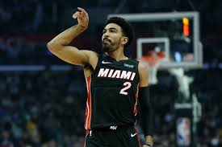

Gabe Vincent (1996 6월 14일 출생)는 대한 나이지리아 미국 프로 농구 선수인 마이애미 히트 의 전국 농구 협회 A의 (NBA) 양방향 계약 와 수 폴스 스카이 포스 의 NBA G 리그 . 그는 또한 나이지리아 국가 농구 팀에서 뛰고 있습니다. 그는 UC Santa Barbara Gauchos 에서 대학 농구 를했습니다. 
ㅓ머니아러민 ㄹ먼 마너 ㅁ ㄴㅇ러ㅏㅁㄴ ㄹ 먼ㅇ라먼ㅇ리ㅏ먼ㅇ ㄻ넝리ㅏ먼이ㅏ럼니아러ㅐ압 ㅓㅣ얼미ㅏㅓㄴㄷ림ㄴㅇ ㄹ마ㅓ야ㅔㅏ럼ㄴㅇ